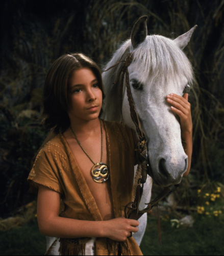

WELCOME ABOARD, ATREYU
Your ship. Your rocket bus. Your daily ride.

Top-down ecliptic view · Linear AU scalePlanet sizes enlarged · Surfaces illustrative
STARFLEET MOBILITY
Choose a vessel to review your voyage.
Hailing nearby vessels.
Explore without limits.
Proteron ships by Viktor Hahn · CC BY 4.0 · Scotty lighting treatment
Your voyages, your pilots, your next horizon.
Your recent Scotty journeys.